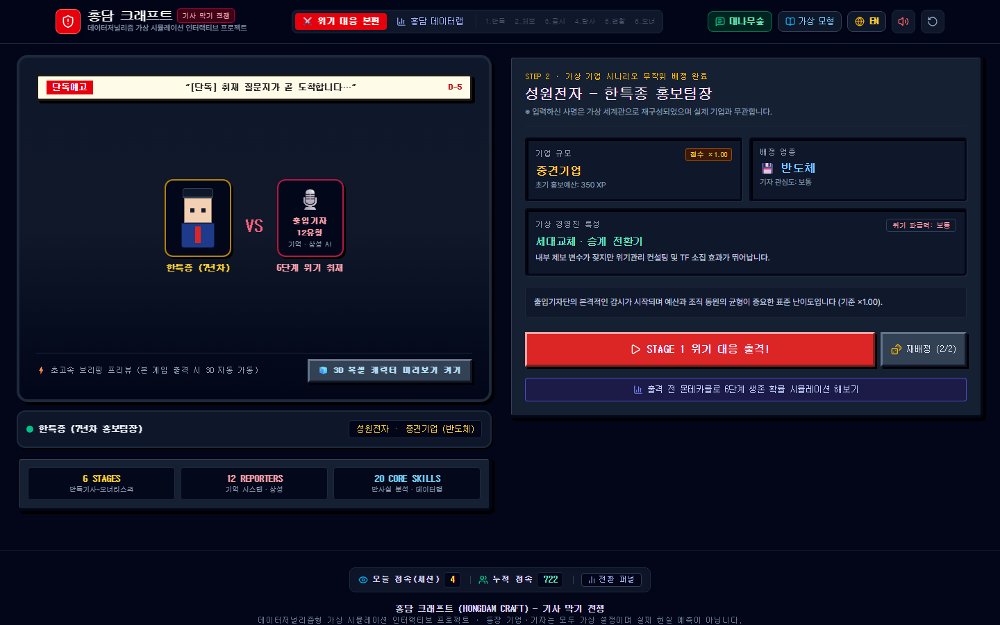
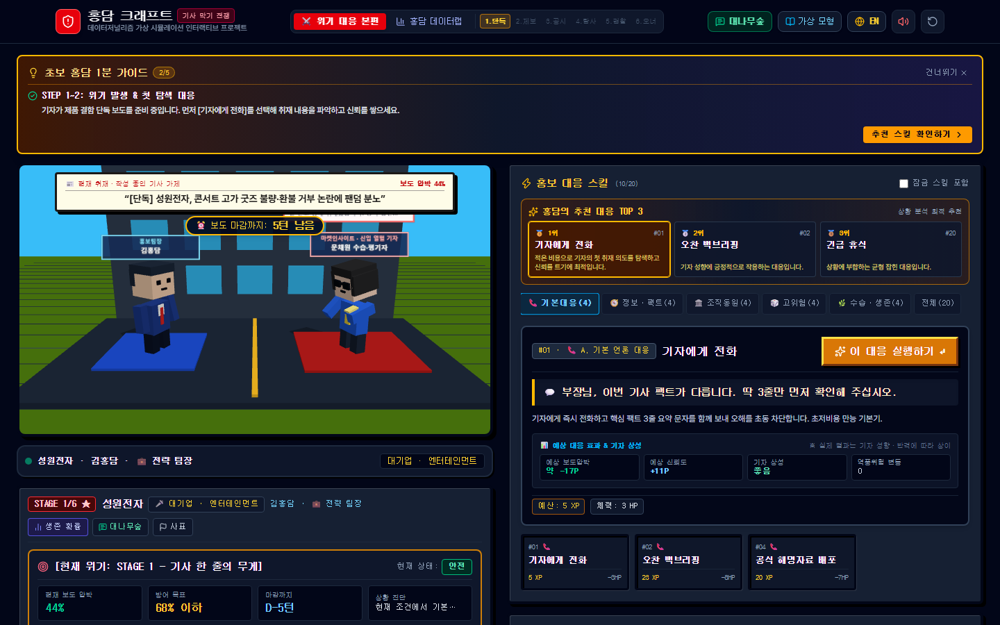
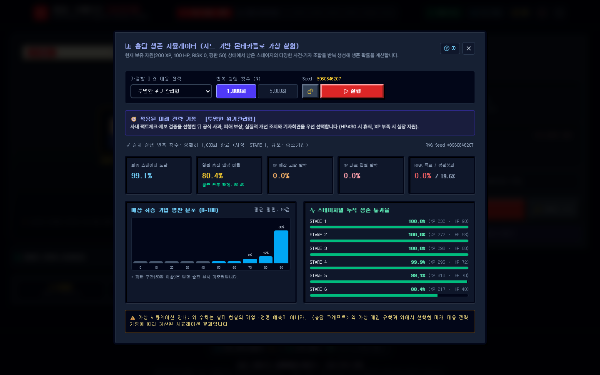

이런 게임입니다
기자는 기사를 쓰는 사람이지만, 그 기사를 받아 내는 쪽에는 기업 홍보팀장이 있습니다. 질문지는 오전에 도착하고 마감은 저녁에 닥칩니다. 해명을 하면 오히려 역풍이 불고, 입을 닫으면 단독 기사가 나갑니다.
홍담 크래프트는 그 반대편의 하루를 게임으로 옮겼습니다. 가상의 기업에 소속된 홍보팀장으로서 단독, 제보, 공시, 탐사, 검찰, 오너라는 여섯 단계의 위기를 차례로 넘깁니다. 매 단계마다 기자가 던지는 질문과 압박을 보고 홍보예산(XP)과 체력(HP), 역풍위험(RISK), 기업평판을 저울질하며 대응을 고릅니다.
기자는 12가지 유형으로 나뉘고 서로 다른 성향과 기억, 상성을 가집니다. 같은 대응도 어떤 기자에게는 통하고 어떤 기자에게는 독이 됩니다. 이 모든 규칙을 바탕으로 생존 확률을 몬테카를로로 시뮬레이션해 볼 수도 있어서, 단순한 퀴즈가 아니라 전략을 짜는 게임입니다.
등장하는 기업과 기자는 모두 가상 설정이며 실제 현실을 예측하지 않습니다. 입력한 사명도 가상 세계관으로 재구성됩니다.
이렇게 진행됩니다
이름과 소속 회사를 정하고(랜덤 지원) 난이도를 고릅니다. 신입 팀장(×0.85, 돌발 위험과 기자 반격 완화, 패배 시 재도전), 전략 팀장(×1.00, 표준), 전설의 팀장(×1.50, 기자 반격 +20%, 돌발 위험 50%, 최종 점수 1.5배)이 있고, 헤어스타일·수트 색·피부톤·넥타이·안경으로 3D 복셀 캐릭터를 꾸밉니다.
소속 회사의 규모(스타트업부터 재벌)와 업종, 기자 관심도, 경영진 특성이 무작위로 배정됩니다. 예를 들면 중견 반도체 기업에 승계 전환기 경영진이 걸릴 수 있고, 규모에 따라 점수 배율과 초기 홍보예산이 달라집니다. 마음에 안 들면 재배정(2회)할 수 있습니다.
1단계 단독, 2단계 제보, 3단계 공시, 4단계 탐사, 5단계 검찰, 6단계 오너리스크. 각 단계마다 현재 보도 압박, 방어 목표, 마감까지 남은 턴이 표시되고 생존 확률과 상황 진단이 실시간으로 갱신됩니다. 매 턴 자동 저장됩니다.
기억·상성 AI가 기자의 성향에 따라 대응이 통하는 정도를 바꿉니다. 반사실 분석과 홍담 데이터랩 같은 20개 핵심 스킬이 판단을 돕습니다.
시드 기반 몬테카를로로 남은 스테이지를 1,000회 또는 5,000회 반복해 생존 확률을 계산합니다. 투명한 위기관리형, 정보·팩트체크형, 관계 중심형, 법적 대응형, 예산 투입형, 무작위 대응형(기준선), 내 실제 플레이 패턴 중 미래 전략을 가정해 최종 스테이지 도달률, 임원 승진 엔딩 비율, 탈락 원인, 평판 분포, 스테이지별 통과율을 봅니다.
플레이 기록을 분석하는 데이터랩과, 익명으로 소감과 넋두리를 남기는 대나무숲 라운지가 있습니다. 1단계만 끝내도 결과를 공유할 수 있습니다.
화면 미리보기
시작 — 홍보팀장 신상과 난이도

배정 — 무작위 가상 기업

1단계 — 기사 한 줄의 무게

시뮬레이터 — 6단계 생존 확률
규칙과 시뮬레이션
예시 결과(중소기업, 투명한 위기관리형, 1,000회, 시드 3960846207): 최종 스테이지 도달 99.1%, 임원 승진 엔딩 80.4%, 예산 고갈 탈락 0.0%, 체력 탈락 0.0%, 평판 붕괴 19.6%. 이 수치는 게임 규칙과 선택한 전략 가정으로 계산한 시뮬레이션 결과이며 실제 기업이나 언론을 예측하지 않습니다.
알아 둘 것
이 게임은 데이터저널리즘 가상 시뮬레이션입니다. 기업, 기자, 위기 사건은 모두 가상 설정이고, 점수와 확률은 게임을 위해 만든 규칙에서 나옵니다. 실제 홍보 전략이나 취재 결과를 보장하거나 예측하지 않습니다.
난이도를 올릴수록 기자 반격과 돌발 위험이 커지고 패배 시 재도전 기회가 줄어듭니다. 신입 팀장 난이도에서만 패배 후 재도전을 지원합니다.
서비스 하단에는 "등장 기업·기자는 모두 가상 설정이며 실제 현실 예측이 아닙니다"라는 안내가 있습니다.
기술 및 제작 방식
개발 현황
누구나 바로 플레이할 수 있습니다. 매 턴 자동 저장되고, 소리 켜기·끄기와 처음부터 다시 하기 버튼이 있습니다.